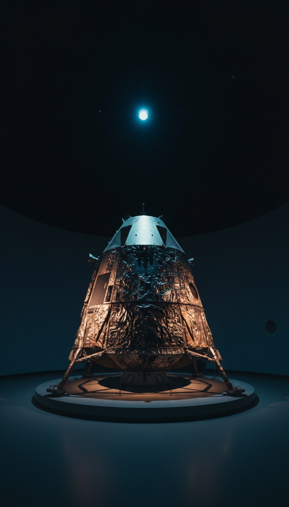

The astronaut who left his family's photograph on the Moon says the lights in our sky are demons.
Charlie Duke walked the Descartes Highlands in April 1972. Fifty-four years later, the youngest man ever to stand on the lunar surface is putting one word on the phenomenon, the same word Pentagon insiders have used behind closed doors. Demonic.

The Youngest Man On Another World
Apollo 16 launched from Pad 39A at Kennedy Space Center on April 16, 1972. Four days later, on April 20, Duke piloted the lunar module Orion down to the Descartes Highlands with commander John Young beside him, while Ken Mattingly circled overhead in the command module Casper. Duke was 36 years old. Nobody younger has walked the Moon, before or since.
He spent 71 hours on the surface. He made three moonwalks, drove the lunar rover across the rim of North Ray crater, climbed the slopes of Stone Mountain, and helped load 211 pounds of rock for the trip home.
You can stand next to the receipt today. Casper, the capsule that carried Duke back through the atmosphere, sits on display at the U.S. Space & Rocket Center in Huntsville, Alabama. The scorch marks from reentry are still on the heat shield.
Three years earlier, Duke was the voice of Mission Control for Apollo 11. When Armstrong reported the Eagle had landed on July 20, 1969, it was Duke who answered: "You got a bunch of guys about to turn blue. We're breathing again." NASA put him on that microphone because he reported exactly what was in front of him, and nothing extra.
The Photograph Still Lying In The Lunar Dust
Before he climbed back into Orion, Duke knelt and laid a photograph on the gray soil. It shows Charlie, his wife Dotty, and their two sons, Charles and Tom, posed together on Earth. He sealed it in plastic. On the back he wrote: "This is the family of Astronaut Charlie Duke from Planet Earth. Landed on the Moon, April 1972."
Then he photographed it where it lay. That NASA image of the family portrait resting on the Moon is part of the Apollo 16 archive.
The Moon has no wind and no rain, so the photograph has stayed exactly where he set it down. It is still there right now, 238,000 miles away. A man who leaves his children's faces on another world is careful about what he says when he gets home.
Six Years Later, He Found A Name For It
Duke came home a celebrity and a brigadier general in the making. Something was still missing. Dotty came to faith first. In 1978, six years after Descartes, Charlie followed her, and he has spoken about it ever since. His most quoted line: "My walk on the Moon lasted three days and it was a great adventure, but my walk with Jesus lasts forever."
He and Dotty told the full story in their 1990 memoir, Moonwalker. The man who once took orders from flight directors now takes them from scripture.
In a CBN interview that resurfaced this month, Duke said the thing the rest of the astronaut corps tiptoes around. UFOs are real. He calls them demonic, deceptions run by fallen angels, and he goes to Second Corinthians 11:14 for his proof: "And no marvel; for Satan himself is transformed into an angel of light."
An angel of light. Look at what witnesses describe: glowing orbs, luminous discs, beings that arrive in light and leave in light. Paul wrote that line nineteen centuries before the first flying saucer headline.
Pentagon Insiders Reached The Same Door
Duke is in company he never asked for. Luis Elizondo, the former counterintelligence officer who ran the Pentagon's AATIP program, writes in his 2024 book Imminent that senior officials told him they already knew what the phenomenon was. Their answer was demonic, and some of them pushed to choke off the research because of it.
Jacques Vallée got there in 1969. The astronomer and computer scientist, who worked on ARPANET and served as a model for the French scientist in Close Encounters of the Third Kind, published Passport to Magonia, showing that modern UFO encounters line up beat for beat with centuries of fairy abductions, incubus visits, and demonic apparitions. Same lights. Same missing time. Same entities that lie to the people they visit.
John Keel went further in Operation Trojan Horse, published in 1970. Keel called the visitors ultraterrestrials, entities that shapeshift to match each era's expectations, and he put his casework side by side with the old demonology manuals. He found the same patterns.
The pushback writes itself: Duke is a churchgoer seeing his faith in the sky. That line falls apart on his resume. Duke graduated from the U.S. Naval Academy in 1957, earned a master's in aeronautics and astronautics from MIT in 1964, and finished the Aerospace Research Pilot School at Edwards Air Force Base under Chuck Yeager. Elizondo came out of counterintelligence. Vallée came out of astrophysics. Keel came out of journalism. Four trades, three of them with no pulpit anywhere near, and all four arrive at the same answer.
Satan himself is transformed into an angel of light. A man who walked on the Moon reads that verse and looks up at the orbs in our sky.
Twelve Men, And None Came Back The Same
Only twelve human beings have stood on the Moon and looked back at Earth. Several came home carrying something they could not put down.
Buzz Aldrin took communion inside the lunar module Eagle on July 20, 1969, before anyone stepped outside. James Irwin of Apollo 15 founded the High Flight Foundation in 1972 as an evangelical ministry, then spent the 1980s climbing Mount Ararat in Turkey looking for Noah's Ark. Edgar Mitchell of Apollo 14 founded the Institute of Noetic Sciences in 1973 and spent the rest of his life saying visitors from elsewhere had come here and the government knew.
Mitchell said they are visitors. Duke says they are deceivers. Two moonwalkers, two answers, and one shared certainty: something is here. Duke's is the darker reading, and he is the one still talking.
The Sky Paul Warned About
Scripture already has an address for these beings. Ephesians 2:2 names Satan "the prince of the power of the air." Ephesians 6:12 puts the war "against spiritual wickedness in high places." The air. High places. That is exactly where pilots, radar operators, and Navy aviators keep reporting objects that break every rule of flight.
Duke has flown higher than almost anyone alive. He trained his whole career to read the sky. When a man like that reaches for an angel of light to explain what moves through it, he is pointing at a pattern written down long before Roswell.
Charlie Duke stood on a world with no sky at all. Black overhead, Earth hanging in the dark, his family's photograph at his feet. He came home, opened a book written two thousand years ago, and found a description of what fills ours.
If he is right, every sighting is an introduction, and every light that hovers over a highway at 3 a.m. knows exactly who is watching it. So answer this one honestly in the comments. Have you seen one of them? And when you did, did it feel like a visitor, or did it feel like it already knew your name?
Before you go
7 books the Vatican doesn't want you reading. Free PDF. The texts they cut, with sources. Joined by 300+ Inner Circle members.
No spam. Unsubscribe anytime.
Go deeper
The Hidden Canon, Vol. I: Enoch. Jubilees. Thomas. Mary. Judas. 90 pages, 14 chapters, every receipt cited. The books your Bible quietly removed.
Read the Canon →Books that informed this investigation
As an Amazon Associate, Hidden Epoch earns from qualifying purchases. Cost to you: nothing.
Research safely
The VPN we use to research without being tracked. First 3 months free.
Get NordVPN →